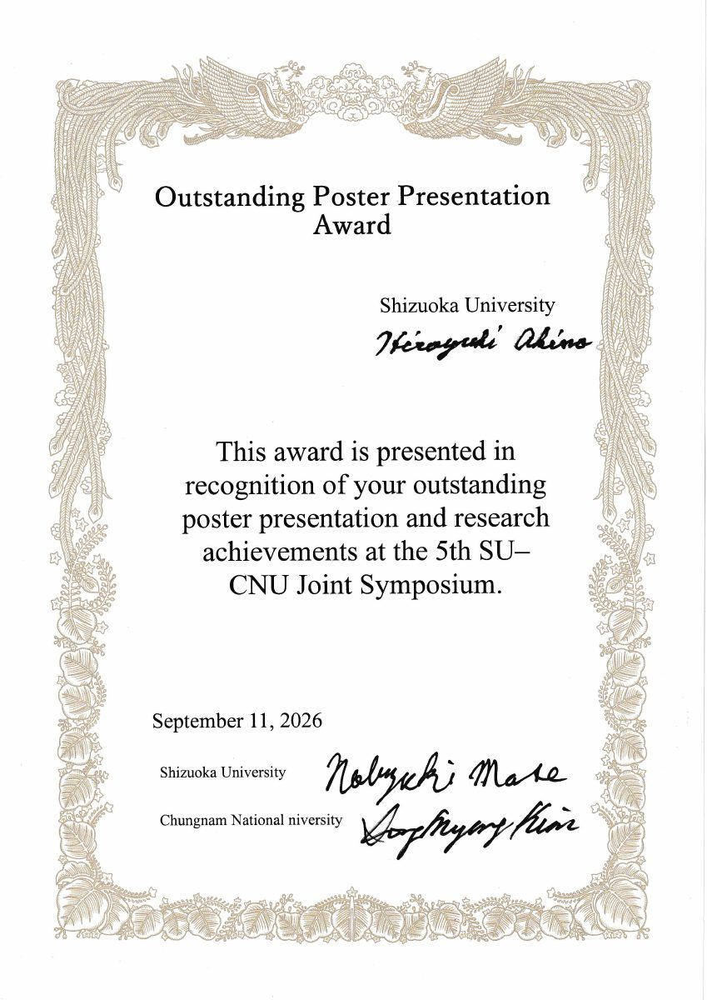

01CARBON
CIRCULATIONCO₂ → SYNGAS · SOLID CARBON
CIRCULATIONCO₂ → SYNGAS · SOLID CARBON
CATALYSIS · REACTION ENGINEERING · CARBON CIRCULATION
静岡大学 渡部研究室
Transforming molecules, energy, and carbon through catalytic reaction engineering.
REACTION ENGINEERING FOR A CARBON-CIRCULATING SOCIETY
触媒化学、反応工学、電化反応を横断し、CO₂・メタン・水素・炭素資源・硫黄種を対象とした新しい反応プロセスを研究します。
材料、構造、反応器、エネルギー供給を横断する4つの研究テーマ。
STRUCTURED CATALYSTS
スパイラル、金属多孔体、ウォッシュコートを活用し、熱・物質移動まで含めた触媒反応器を構築します。
View research ↗e-REACTION PROCESS
電気エネルギーを反応器・触媒へ直接導入し、高速応答・局所加熱・コンパクト化を活かした反応操作へ展開します。
View research ↗LATTICE SULFUR CATALYSIS
硫化物中の格子Sの放出とH₂Sによる再挿入を利用し、硫黄欠陥を介して格子Sを反復利用するレドックス型触媒プロセスを研究します。
View research ↗Dry Reforming of Methane with an Integrated Carbon-Capture Stage: Equilibrium Shifting and Solid Carbon Fixation
Journal of the Japan Petroleum Institute (2026)
炭素捕集段を組み込んだメタンのドライ改質において、反応平衡の移動と固体炭素固定化を検討した研究です。
採択のお知らせを読む
2026年9月11日、第5回 SU-CNU Joint Symposiumにおいて、当研究室の秋野寛幸さん（学部4年）がOutstanding Poster Presentation Awardを受賞しました。ポスター発表と研究成果が評価されたものです。
賞状を見る（PDF） ↗Newsの記事を開く ↗